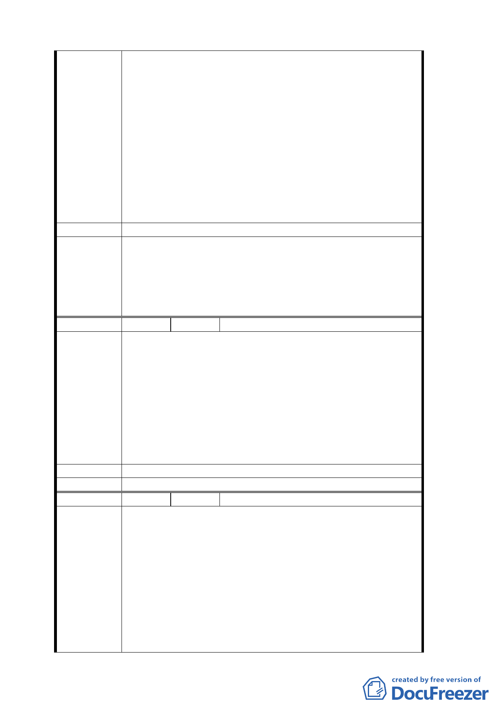

建議辦法
委員會決議
部規劃，致無法有效利用）至今閑置荒廢，不但阻礙都市發展
且嚴重影響土地所有權人權益。
2. 民國 89 年 6 月 26 日及 8 月 9 日現場會勘，該土地大部分為平
地且建有房屋而非山坡地實不應規劃為保護區在案；今之規劃
案卻為保護區。
3. 本變更案僅依國民黨換地範圍劃定，而將私有土地劃為保護區
實有失公平。
4. 上述土地經本人向地政機關申請鑑界，該土地為平坦土地，經
都發局規劃為保護區（原行政區）實有違常理。
5. 依都發局規劃書說明，凡坡度不超過坡度 30%列為永建國小預
定地，本人等所有土地未列永建國小預定地卻為保護區實有不
當，為釐正本案，請推派代表會勘基地給地主一個說明機會，
以保障百姓權益。
請將上述土地納入永建國小預定地辦理徵收或交換土地。
1. 本案有關土地權屬疑義之處理已超越本會審議權責，如有涉及
過去歷史背景因素而影響相關當事人之權益，應另循法律途徑
解決。
2. 案內元利建設股份有限公司對西北側基地保護區私地主權益之
保障與承諾事項，納入主要計畫說明書內容予以規範。
3. 餘依市府補充資料及簡報資料等修正內容，照案通過。
編號
陳情理由
建議辦法
委員會決議
２ 陳情人 高樹德
1. 本人土地文山區華興段 1 小段 134 地號（面積 9495 平方公尺，
公告現值為 3600 元/平方公尺）、146 地號（面積 4306 平方公
尺，公告現值為 57700 元/平方公尺），地目現為「行政區」。
2. 本土地於民國 60 年間之都市通盤檢討時訂為住二用地，後於
民國 70 年間再一次通盤檢討，變更為行政區凍結不能使用，
已達 24 年之久。
3. 如今政府不但不徵收，竟將其變更為保護區以規避徵收，枉顧
人民權益，人民財產損失甚鉅。
4. 而同一案中部分原行政區卻變更為學校用地及住宅用地，顯不
公平。
重新檢討本案，考慮全區或區段徵收或以重劃方式辦理。
同編號 1
編號
陳情理由
３ 陳情人 祭祀公業張秀卿管理人張國村
陳情位置：文山區華興段一小段 440 地號
陳情理由：
1. 本計畫範圍內原有本公業土地 4606 平方公尺，即重測前之溝子
口小段 11 地號與 13 地號兩筆（重測後併入華興段 1 小段 440
地號），被國民黨於民國 40 年代低價強制徵用，58 年都市計畫
劃為「機關用地」，61 年強制過戶登記予「革命實踐研究院」，
嗣後更名為「社團法人中國國民黨」。本公業謹基於土地關係人
之立場，就過去遭受違法不當之處置提出陳情，請貴府主持公
平正義。
2. 查國民黨執政時期，以軍事需求強制徵用控管，並以政府特權
訂定都市計畫為「機關用地」，卻不供政府機關使用，違反都市
19